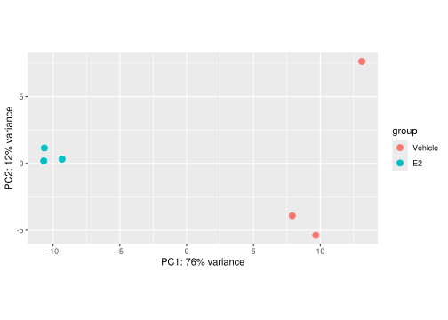
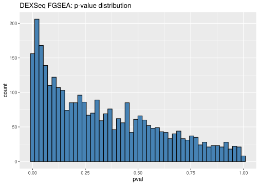
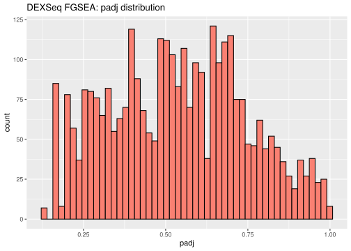

set.seed(37)01_dataset1
Load data
gene_counts_1 <- readRDS("gene_counts_1.rds")
meta1_clean <- readRDS("meta1_clean.rds")
isoform_counts_1 <- readRDS("isoform_counts_1.rds")Dataset1
Differential Gene Expression
Load libraries
library(tidyverse)
library(DESeq2)
library(DEXSeq)
library(fgsea)
library(msigdbr)Create colData
colData1 <- meta1_clean
colData1$treatment <- factor(
colData1$treatment,
levels = c("Vehicle", "E2")
)
all(rownames(colData1) == colnames(gene_counts_1))[1] TRUEDESeq2
Create DESeqDS object
dds1 <- DESeqDataSetFromMatrix(
countData = gene_counts_1,
colData = colData1,
design = ~ treatment )
dds1class: DESeqDataSet
dim: 67186 6
metadata(1): version
assays(1): counts
rownames(67186): ENSG00000000003 ENSG00000000005 ... ENSG00000290165
ENSG00000290166
rowData names(0):
colnames(6): GSM4291169 GSM4291170 ... GSM4291173 GSM4291174
colData names(2): cell_line treatmentPCA
plotPCA(rlog(dds1), intgroup=c("treatment"))using ntop=500 top features by varianceWarning: `aes_string()` was deprecated in ggplot2 3.0.0.
ℹ Please use tidy evaluation idioms with `aes()`.
ℹ See also `vignette("ggplot2-in-packages")` for more information.
ℹ The deprecated feature was likely used in the DESeq2 package.
Please report the issue to the authors.
Test for DE
dds1 <- DESeq(dds1) estimating size factorsestimating dispersionsgene-wise dispersion estimatesmean-dispersion relationshipfinal dispersion estimatesfitting model and testingres1 <- results(dds1)
res1log2 fold change (MLE): treatment E2 vs Vehicle
Wald test p-value: treatment E2 vs Vehicle
DataFrame with 67186 rows and 6 columns
baseMean log2FoldChange lfcSE stat pvalue
<numeric> <numeric> <numeric> <numeric> <numeric>
ENSG00000000003 905.731 0.0209423 0.0938151 0.223230 8.23357e-01
ENSG00000000005 0.000 NA NA NA NA
ENSG00000000419 1192.667 -0.0211883 0.1019139 -0.207904 8.35304e-01
ENSG00000000457 516.616 -0.5036452 0.1249229 -4.031647 5.53872e-05
ENSG00000000460 377.739 -0.2118244 0.1365076 -1.551741 1.20724e-01
... ... ... ... ... ...
ENSG00000290162 0.00000 NA NA NA NA
ENSG00000290163 0.00000 NA NA NA NA
ENSG00000290164 0.00000 NA NA NA NA
ENSG00000290165 0.00000 NA NA NA NA
ENSG00000290166 2.95578 1.71959 1.64639 1.04446 0.296273
padj
<numeric>
ENSG00000000003 0.909977147
ENSG00000000005 NA
ENSG00000000419 0.917100390
ENSG00000000457 0.000384232
ENSG00000000460 0.274504424
... ...
ENSG00000290162 NA
ENSG00000290163 NA
ENSG00000290164 NA
ENSG00000290165 NA
ENSG00000290166 NAdes_sig_1 <- rownames(res1)[which(res1$padj < 0.05)]GSEA (FSC)
BP_df = msigdbr(species = "human", category = "C5", subcategory = "BP")
BP_list = split(BP_df$ensembl_gene, BP_df$gs_name)des_stats_1 <- res1[,"stat"]
names(des_stats_1) <- sub("\\.\\d+$", "", rownames(res1))
des_stats_1 <- des_stats_1[!is.na(des_stats_1)]
des_stats_1 <- sort(des_stats_1, decreasing = TRUE)fgsea_des_1 <- fgseaMultilevel(
pathways = BP_list,
stats = des_stats_1,
minSize = 15,
maxSize = 500,
scoreType = "std"
)Warning in preparePathwaysAndStats(pathways, stats, minSize, maxSize, gseaParam, : There are ties in the preranked stats (28.7% of the list).
The order of those tied genes will be arbitrary, which may produce unexpected results.fg_sig_des_1 <- fgsea_des_1 %>%
arrange(padj) %>%
filter(padj < 0.05)
nrow(fg_sig_des_1)[1] 340fg_sig_des_1[1:10] pathway pval
<char> <num>
1: GOBP_RIBOSOME_BIOGENESIS 8.932362e-43
2: GOBP_NCRNA_PROCESSING 3.311564e-37
3: GOBP_RRNA_METABOLIC_PROCESS 2.335706e-35
4: GOBP_TRNA_METABOLIC_PROCESS 6.804773e-16
5: GOBP_RIBOSOMAL_LARGE_SUBUNIT_BIOGENESIS 1.188114e-13
6: GOBP_MATURATION_OF_SSU_RRNA 4.093150e-13
7: GOBP_RNA_LOCALIZATION 5.494558e-13
8: GOBP_RIBOSOMAL_SMALL_SUBUNIT_BIOGENESIS 5.980052e-12
9: GOBP_TRNA_PROCESSING 5.206621e-11
10: GOBP_RIBONUCLEOPROTEIN_COMPLEX_SUBUNIT_ORGANIZATION 1.064886e-10
padj log2err ES NES size leadingEdge
<num> <num> <num> <num> <int> <list>
1: 3.787321e-39 1.7026781 0.7782580 2.573345 330 ENSG0000....
2: 7.020516e-34 1.5894558 0.7242390 2.428681 424 ENSG0000....
3: 3.301132e-32 1.5498781 0.7718823 2.510083 287 ENSG0000....
4: 7.213060e-13 1.0276699 0.6964946 2.218941 210 ENSG0000....
5: 1.007520e-10 0.9436322 0.8171167 2.321236 77 ENSG0000....
6: 2.892492e-10 0.9325952 0.8545806 2.308990 56 ENSG0000....
7: 3.328132e-10 0.9214260 0.6585602 2.110795 225 ENSG0000....
8: 3.169428e-09 0.8870750 0.7806399 2.231669 82 ENSG0000....
9: 2.452897e-08 0.8513391 0.6969330 2.133808 137 ENSG0000....
10: 4.515118e-08 0.8390889 0.6208834 1.997938 237 ENSG0000....All of these pathways are related to ribosome biogenesis and RNA metabolism/processing, including:
rRNA and tRNA metabolism/processing (
GOBP_RRNA_METABOLIC_PROCESS,GOBP_TRNA_METABOLIC_PROCESS,GOBP_MATURATION_OF_SSU_RRNA,GOBP_TRNA_PROCESSING)Ribosomal subunit biogenesis (
GOBP_RIBOSOMAL_LARGE_SUBUNIT_BIOGENESIS,GOBP_RIBOSOMAL_SMALL_SUBUNIT_BIOGENESIS)Ribonucleoprotein complex assembly (
GOBP_RIBONUCLEOPROTEIN_COMPLEX_SUBUNIT_ORGANIZATION)ncRNA processing and RNA localization (
GOBP_NCRNA_PROCESSING,GOBP_RNA_LOCALIZATION)The top GSEA hits suggest that the treatment primarily affects ribosome biogenesis and RNA processing programs.
(Opt) leading-edge genes
(Opt) non-dir
Differential Isoform Usage
Pre-filter
n_samples <- ncol(isoform_counts_1)
min_samples <- 3
isoform_counts_filtered_1 <- isoform_counts_1[
rowSums(isoform_counts_1 >= 10) >= min_samples,
]Gene annotation
txInfo <- readr::read_rds('/home/projects/22140/exam_data/Homo_sapiens.GRCh38.107.chr_patch_hapl_scaff_tx_info.Rds')tx2gene <- data.frame(
featureID = txInfo$transcript_id,
groupID = txInfo$gene_id
)
tx2gene_filtered <- tx2gene[tx2gene$featureID %in% rownames(isoform_counts_filtered_1), ]featureID_1 <- rownames(isoform_counts_filtered_1)
groupID_1 <- as.character(tx2gene_filtered$groupID[match(featureID_1, tx2gene_filtered$featureID)])
length(featureID_1)[1] 66229length(groupID_1)[1] 66229DEXSeq
Create object
dxdSubset_1 <- DEXSeqDataSet(
countData = isoform_counts_filtered_1,
sampleData = meta1_clean,
design= ~ sample + exon + treatment:exon,
featureID = featureID_1,
groupID = groupID_1
)converting counts to integer modeWarning in DESeqDataSet(rse, design, ignoreRank = TRUE): some variables in
design formula are characters, converting to factorsTest for DIU
dxdSubset_1 <- estimateSizeFactors(dxdSubset_1)dxdSubset_1 <- estimateDispersions(dxdSubset_1)dxdSubset_1 <- testForDEU(
dxdSubset_1,
fullModel = ~ sample + exon + treatment:exon
)dxdSubset_1 <- estimateExonFoldChanges(dxdSubset_1, fitExpToVar = "treatment")dxdResult_1 <- DEXSeqResults(dxdSubset_1)alpha <- 0.05
dex_sig_1 <- dxdResult_1[!is.na(dxdResult_1$padj) & dxdResult_1$padj < alpha, ]
nrow(dex_sig_1)[1] 942length(unique(dex_sig_1$groupID))[1] 769Top 5 genes
dex_df_1 <- as.data.frame(dxdResult_1)
dex_df_1 <- dex_df_1[order(dex_df_1$padj), ]
top5_genes <- dex_df_1$groupID[!is.na(dex_df_1$padj)][1:5]
top5_genes[1] "ENSG00000008838" "ENSG00000141279" "ENSG00000196876" "ENSG00000198793"
[5] "ENSG00000147100"[1] “ENSG00000008838”
[2] “ENSG00000141279”
[3] “ENSG00000196876”
[4]“ENSG00000198793”
[5] “ENSG00000147100”
Compare to DE
dexseqResultGene_1 <-
dxdResult_1 %>%
as.data.frame() %>%
as_tibble() %>%
filter(
! is.na(stat)
) %>%
# Select and rename columns
dplyr::select(
gene_id = groupID,
isoform_id = featureID,
stat,
log2FC = log2fold_Vehicle_E2,
pvalue,
padj
) %>%
group_by(gene_id) %>%
# For each gene, keep only the single isoform with the smallest p-value
slice_min(
order_by = pvalue,
n = 1,
with_ties = FALSE
) %>%
ungroup() %>%
# Recalculate FDR across genes using those per-gene minimal p-values.
mutate(
padj = p.adjust(pvalue, method = 'fdr')
)Gene level
ORA
dex_gene_1 <- dexseqResultGene_1 %>%
mutate(
gene_id,
dex_padj = padj,
dex_sig = !is.na(padj) & padj < alpha)des_gene_1 <- as.data.frame(res1) %>%
tibble::rownames_to_column("gene_id") %>%
dplyr::mutate(
des_padj = padj,
des_sig = !is.na(padj) & padj < alpha
)univ_1 <- intersect(
dex_gene_1$gene_id,
des_gene_1$gene_id
)
both_1 <- dex_gene_1 %>%
filter(gene_id %in% univ_1) %>%
mutate(gene_id, dex_sig) %>%
inner_join(des_gene_1 %>%
filter(gene_id %in% univ_1) %>%
mutate(gene_id, des_sig), by = "gene_id")
# Contingency table (DEXSeq vs DESeq2 significance)
contig_tab_1 <- table(
DEXSeq = both_1$dex_sig,
DESeq2 = both_1$des_sig)
contig_tab_1 DESeq2
DEXSeq FALSE TRUE
FALSE 7146 3637
TRUE 710 596Fisher’s test
ft_1 <- fisher.test(
contig_tab_1,
alternative = "greater")
ft_1
Fisher's Exact Test for Count Data
data: contig_tab_1
p-value < 2.2e-16
alternative hypothesis: true odds ratio is greater than 1
95 percent confidence interval:
1.493609 Inf
sample estimates:
odds ratio
1.64932 Gene-set level
dex_names_1 <- sub("\\.\\d+$", "", dex_gene_1$gene_id)
dex_vals_1 <- dex_gene_1$stat
stats_dex_1 <- setNames(dex_vals_1, dex_names_1)
stats_dex_1 <- stats_dex_1[!is.na(stats_dex_1)]
stats_dex_1 <- sort(stats_dex_1, decreasing = TRUE)
stats_dex_abs <- abs(stats_dex_1)fgsea_dex_1 <- fgseaMultilevel(
pathways = BP_list,
stats = stats_dex_1,
minSize = 15,
maxSize = 500,
scoreType = "std"
)Warning in preparePathwaysAndStats(pathways, stats, minSize, maxSize, gseaParam, : There are ties in the preranked stats (2.12% of the list).
The order of those tied genes will be arbitrary, which may produce unexpected results.Warning in fgseaMultilevel(pathways = BP_list, stats = stats_dex_1, minSize =
15, : There were 3 pathways for which P-values were not calculated properly due
to unbalanced (positive and negative) gene-level statistic values. For such
pathways pval, padj, NES, log2err are set to NA. You can try to increase the
value of the argument nPermSimple (for example set it nPermSimple = 10000)sig_des_1 <- fgsea_des_1 %>%
filter(padj < alpha) %>%
arrange(padj)
sig_dex_1 <- fgsea_dex_1 %>%
as_tibble() %>%
filter(padj < 0.05) %>%
arrange(padj)n_sig_des_1 <- nrow(sig_des_1)
n_sig_dex_1 <- nrow(sig_dex_1)
# shared pathways (by name)
shared_1 <- intersect(sig_des_1$pathway, sig_dex_1$pathway)
length(shared_1)[1] 0Check
library(ggplot2)
genes_in_pathways <- unlist(BP_list)
mapping_rate <- sum(names(stats_dex_1) %in% genes_in_pathways) / length(stats_dex_1)
cat("Mapping rate of genes to pathway gene sets:", mapping_rate, "\n")Mapping rate of genes to pathway gene sets: 0.8149557 fgsea_dex_1_df <- as_tibble(fgsea_dex_1)
ggplot(fgsea_dex_1_df, aes(x = pval)) +
geom_histogram(bins = 50, fill = "steelblue", color = "black") +
ggtitle("DEXSeq FGSEA: p-value distribution")Warning: Removed 3 rows containing non-finite outside the scale range
(`stat_bin()`).
ggplot(fgsea_dex_1_df, aes(x = padj)) +
geom_histogram(bins = 50, fill = "salmon", color = "black") +
ggtitle("DEXSeq FGSEA: padj distribution")Warning: Removed 3 rows containing non-finite outside the scale range
(`stat_bin()`).
Combine p-values
des_pvals_1 <- data.frame(
gene_id = rownames(res1),
pvalue_deseq2 = res1$pvalue,
stringsAsFactors = FALSE
)
dex_pvals_1 <- data.frame(
gene_id = dex_df_1$groupID,
pvalue_dexseq = dex_df_1$pvalue,
stringsAsFactors = FALSE
)
joint_pvals_1 <- merge(des_pvals_1, dex_pvals_1, by = "gene_id")
joint_pvals_1 <- joint_pvals_1 %>%
rowwise() %>%
mutate(
joint_pval_fisher =
if (is.na(pvalue_deseq2) || is.na(pvalue_dexseq)) NA
else metap::sumlog(c(pvalue_deseq2, pvalue_dexseq))$p
) %>%
ungroup()Gene level
joint_pvals_1 <- joint_pvals_1 %>%
mutate(
padj_deseq2 = p.adjust(pvalue_deseq2, method = "BH"),
padj_dexseq = p.adjust(pvalue_dexseq, method = "BH"),
padj_joint = p.adjust(joint_pval_fisher, method = "BH"),
sig_deseq2 = padj_deseq2 < alpha,
sig_dexseq = padj_dexseq < alpha,
sig_joint = padj_joint < alpha
)sig_counts_1 <- c(
DESeq2 = sum(joint_pvals_1$sig_deseq2, na.rm = TRUE),
DEXSeq = sum(joint_pvals_1$sig_dexseq, na.rm = TRUE),
Joint = sum(joint_pvals_1$sig_joint, na.rm = TRUE)
)
sig_counts_1DESeq2 DEXSeq Joint
24346 942 21625 unique_joint_1 <- joint_pvals_1 %>%
filter(sig_joint, !sig_deseq2, !sig_dexseq) %>%
nrow()
unique_joint_1[1] 1073Gene-set level
Creat stats
joint_clean_1 <- joint_pvals_1 %>%
arrange(pvalue_deseq2) %>%
distinct(gene_id, .keep_all = TRUE)stats_deseq2_1 <- -log10(joint_clean_1$pvalue_deseq2)
names(stats_deseq2_1) <- joint_clean_1$gene_id
stats_dexseq_1 <- -log10(joint_clean_1$pvalue_dexseq)
names(stats_dexseq_1) <- joint_clean_1$gene_id
stats_joint_1 <- -log10(joint_clean_1$joint_pval_fisher)
names(stats_joint_1) <- joint_clean_1$gene_idfg_deseq2_j_1 <- fgseaMultilevel(
pathways = BP_list,
stats = sort(stats_deseq2_1, decreasing = TRUE),
scoreType = "pos"
)Warning in preparePathwaysAndStats(pathways, stats, minSize, maxSize, gseaParam, : There are ties in the preranked stats (2.11% of the list).
The order of those tied genes will be arbitrary, which may produce unexpected results.fg_dexseq_j_1 <- fgseaMultilevel(
pathways = BP_list,
stats = sort(stats_dexseq_1, decreasing = TRUE),
scoreType = "pos"
)Warning in preparePathwaysAndStats(pathways, stats, minSize, maxSize, gseaParam, : There are ties in the preranked stats (0.86% of the list).
The order of those tied genes will be arbitrary, which may produce unexpected results.fg_joint_j_1 <- fgseaMultilevel(
pathways = BP_list,
stats = sort(stats_joint_1, decreasing = TRUE),
scoreType = "pos"
)Warning in preparePathwaysAndStats(pathways, stats, minSize, maxSize, gseaParam, : There are ties in the preranked stats (0.75% of the list).
The order of those tied genes will be arbitrary, which may produce unexpected results.sig_paths <- function(fgsea_res, alpha = 0.05) {
fgsea_res %>%
filter(padj < alpha) %>%
pull(pathway) %>%
unique()
}
sig_sets_deseq2_1 <- sig_paths(fg_deseq2_j_1)
sig_sets_dexseq_1 <- sig_paths(fg_dexseq_j_1)
sig_sets_joint_1 <- sig_paths(fg_joint_j_1)sig_counts_1 <- c(
DESeq2 = length(sig_sets_deseq2_1),
DEXSeq = length(sig_sets_dexseq_1),
Joint = length(sig_sets_joint_1)
)
sig_counts_1DESeq2 DEXSeq Joint
238 7 140 unique_joint_1 <- setdiff(
sig_sets_joint_1,
union(sig_sets_deseq2_1, sig_sets_dexseq_1)
)
unique_joint_1 [1] "GOBP_AMINO_ACID_TRANSMEMBRANE_TRANSPORT"
[2] "GOBP_CARNITINE_TRANSPORT"
[3] "GOBP_ENDOTHELIAL_CELL_PROLIFERATION"
[4] "GOBP_GLUCOSE_IMPORT"
[5] "GOBP_HORMONE_METABOLIC_PROCESS"
[6] "GOBP_INTESTINAL_EPITHELIAL_STRUCTURE_MAINTENANCE"
[7] "GOBP_MYELOID_LEUKOCYTE_DIFFERENTIATION"
[8] "GOBP_OLIGOPEPTIDE_TRANSPORT"
[9] "GOBP_PLASMA_CELL_DIFFERENTIATION"
[10] "GOBP_POSITIVE_REGULATION_OF_SECRETION"
[11] "GOBP_REGULATION_OF_MYELOID_LEUKOCYTE_DIFFERENTIATION"
[12] "GOBP_RESPONSE_TO_MAGNESIUM_ION"
[13] "GOBP_TRIPEPTIDE_TRANSPORT"